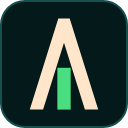
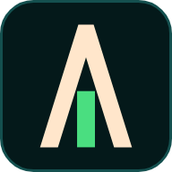
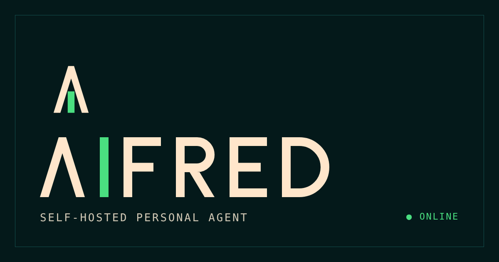

AIFRED
Brand guide v0.1 · self-hosted personal agent
Idea
The mark is a sharp-edged A whose crossbar is replaced by a vertical stem: the letter I inside the A, read as "AI". The stem is the only coloured element (status green) and echoes the "online" indicator of the dashboard. Straight lines, no shadows, a thin 1 px border like the web console.
Mark
Wordmark and lockup
The wordmark is constructed from rectangles and arcs (no font required); the A is a bar-less Λ so "AI" reads as in the mark.
Clear space and minimum sizes
- Clear space: half the height of the A on every side.
- Mark: 16 px minimum; wordmark: 72 px wide minimum; lockup: 120 px minimum.
- Use the green stem only on the dark Teal or light Sand backgrounds; use the monochrome mark elsewhere.
- Do not rotate, skew, add shadows or gradients, or change the proportions.
Colour
Teal is the default theme, Sand the light alternative. Tokens are in tokens.css.
Typography
Titles: wide uppercase sans, +0.06 em tracking (Space Grotesk, falling back to Helvetica/Arial). Labels and values: uppercase monospace, +0.08 em. Text: readable serif, 15 px.
Favicon and icons


favicon.ico (16/32/48) · favicon.svg · apple-touch-icon 180 · icon-192/512 · maskable-512 · og-image 1200×630
Social preview

Installing in the web UI
<link rel="icon" href="/favicon.ico" sizes="48x48"> <link rel="icon" href="/favicon.svg" type="image/svg+xml"> <link rel="apple-touch-icon" href="/apple-touch-icon.png"> <link rel="manifest" href="/manifest.webmanifest"> <meta name="theme-color" content="#04191a"> <meta property="og:image" content="/og-image.png">